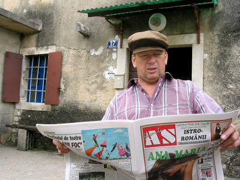
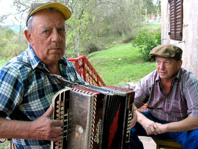
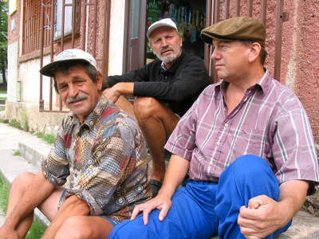

Slike is susjedstva – Ćakule od malo besid
Pretpostavlja se da su u riječkoj luci na pretovaru tereta radili i Istrorumunji, koji su, bacajući vreće jedan drugomu, vikali "Čire bire," što na njihovu jeziku zapravo znači "drži dobro". I tako su ih Riječani nazvali Ćiribircima, zaključuje naš domaćin Pepo
 Josip Glavina, zvan Pepo, umirovljeni je rudar, 50-godišnjak iz maloga istarskog sela Šušnjevice, smještenoga podno planinskog masiva Ćićarije, na čijem prostoru čudnom igrom prirode uspijevaju i masline. Pepa na njegovu skromnom seoskom gospodarstvu zadnjih desetak godina posjećuju sve redom ugledni gosti: Mihai Dorin, rumunjski parlamentarac demokršćanske stranke, Alexandru Costa, ministar za rumunjske nacionalne manjine izvan Rumunjske, dr. Goran Filipi, profesor na Sveučilištu Jurja Dobrile u Puli, rumunjski znanstvenik Petru Neiescu, rumunjski pjesnik Marius Lupuțiu, predstavnici televizije iz Temišvara, Bukurešta, Zagreba…
No premda iznimno popularan u znanstvenim krugovima, Pepo preferira druženje sa svojim "paesanima" Brunom Kontušom, umirovljenikom Hrvatskih željeznica, i Josipom Mikleušom, nezaposlenim bivšim rudarom iz Šušnjevice. Sva su trojica eksperti za stari vlaški jezik, tzv. ćiribirski ili pravilnije istrorumunjski jezik – neobičan rumunjski dijalekt, pod velikim utjecajem hrvatskog i talijanskog jezika, koji se već nekoliko stoljeća čuva u selima na sjevernom rubu Čepićkoga polja.
Butiga "Šušnjevica" - epicentar društvenih događanja
Pepo i njegovi prijatelji dočekali su nas pred butigom "Šušnjevica," središnjim mjestom u selu, gdje se, za sparnih ljetnih mjeseci, u hladu nadstrešnice, ispija hladno pivo.
- More se reć ćiribirski, a mi kažemo da je to vlaški jezik, Žajanci reču da je do žajanski jezik. Ispravno je reći istrorumunjski, objašnjava Pepo različite nazive svoga materinjeg jezika.
 "Čire bire" na istrorumunjskom znači "drži dobro," saznajemo od našeg domaćina. Pretpostavlja se da su u riječkoj luci na pretovaru tereta radili i Istrorumunji, koji su, bacajući vreće jedan drugomu, vikali "čire bire," što u prijevodu znači "drži dobro". I tako su ih Riječani nazvali Ćiribircima, zaključuje Pepo.
- Šušnjevica je naselje zapušteno od Općine Kršan, koja nije ni približno napravila ono što je obećavala. Više se govori u Australiji, Kanadi, Americi istrorumunjski nego u Šušnjevici, žali se Kontuš.
 I dok Kontuš i Mikleuš lagano ispijaju osvježavajuća pića pred prodavaonicom "Šušnjevica," svojevrsnim epicentrom društvenih događanja u mjestu, mi smo već kod drugoga Pepova "favorita," Mire Belulovića. Miro, premda već u osamdesetim godinama i očito nagluh na desno uho, koje je oštetio udarajući godinama čekićem po nakovnju u kovačnici u Koromačnom, savršeno svira harmoniku.
- To je prava trieština, storena je između Brseča i Mošćenice 1978. godine, precizan je barba Miro.
- Pepo je kao naš ambasador. Kada dojdu ovi znanstvenici proučavati vlaški jezik, onda najprije dojdu poli Pepeta, dodaje barba Miro.
Doma vlaški, u crkvi hrvatski, u školi talijanski
Veliki "Istrorumunjski lingvistički atlas" iz 2002. godine autora Gorana Filipija, saznajemo od našeg domaćina, pomoglo je sastaviti među žiteljima Žejana i sela južno od Učke i desetak Istrorumunja iz Šušnjevice.
- Ja dobro razumin današnji rumunjski. Evo, prošlu šetimanu sam od novinara dnevnika As iz Bukurešta dobio njihov časopis i devedeset posto sve razumin, znakovito kima glavom Pepo. "Nekada su naši stari, kao barba Miro, kod kuće govorili po vlaški, u crkvi hrvatski, a u školi talijanski. Mi smo bili poligloti još kao dica!," zaključuje oduševljeno Pepo.
- Znate li odakle su došli vaši preci?, pitamo našeg domaćina.
- Ja san bi puno i sa istraživači iz Rumunjske i ovimi naši iz Akademije znanosti i umjetnosti. Josip Miličević je stalno pobija da smo mi Rumunji, već da smo došli iz Dalmacije i čak iz Bosne, a rumunjski lingvisti govore da smo došli iz Vlaške doline, veli Pepo.
Rumunjski književni jezik, saznajemo od Pepa, zasniva se na četiri dijalekta, a istrorumunjski je veoma sličan jednomu od njih. Odatle velik interes rumunjskih lingvista da posjećuju mjesta uz Čepićko polje, tražeći neke u Rumunjskoj već izumrle riječi.
Nezaboravna Nastassja
- A u Boljunskon Polju san jedan put bija i s Nastassjon Kinski, veli iznenada, ničim izazvan, Pepo prelazeći na svoju drugu veliku opsesiju – statiranje na filmu.
- Ona je prišla s kočijon, a ja san mora neka driva kalat poli kraj. To je bilo sedamnaesto stoljeće. Ona se iskrcala iz kočije i šla u jenu provižorno storenu gostionu. Ja san je pogleda, a nisan smija, i ta se scena morala ponoviti. A mora san je pogledati, oči su same ušle, evocira nezaboravne uspomene sa snimanja "Mušketirke" ("La femme musketeer"), filma koji se u koprodukciji Jadran filma i kompanije Silvester iz Los Angelesa 2002. godine snimao u Istri.
- Delali smo i ljubavne scene u dvorcu Belaju od osan ur do podne, tihim se glasom prisjeća dana statiranja Pepo.
- E to je bilo lipo. Dopeljali su divojke iz Turističkega fakulteta iz Opatije. Pet ih je trebalo delat ka konobarice, a pet, nažalost, kao kurve. Šta ćemo raditi sad? Ljubit se, rekao je režiser. Jednu su mi stavili u krilo i rekli – morate se ljubit. I mi smo se ljubili, stiskali. Jeno četiri ure smo to ponavljali. Četiri kamere su nas snimale istovremeno, uzdiše sjetno Pepo, a pomalo zanemaren barba Miro ponovno se hvata "trieštine".
- Divojka je ruže brala pa je zaspala…, pjevaju naši domaćini.
- Pozdraveš ve ši veric ne opet! (Pozdravljamo vas i dođite nam opet!), na našu molbu Pepo izgovara pozdrav na istrorumunjskom. Utjecaj hrvatskog jezika, barem u izrečenoj rečenici, više je nego očit.
- Pa to i mi razumijemo!, razočarano komentiramo.
- Tot aj bire (Sve je u redu), ozbiljnim tonom odgovara Pepo.
Razgovarao i snimio Radenko Vadanjel
September 6, 2007
© 2007 Glas Istre